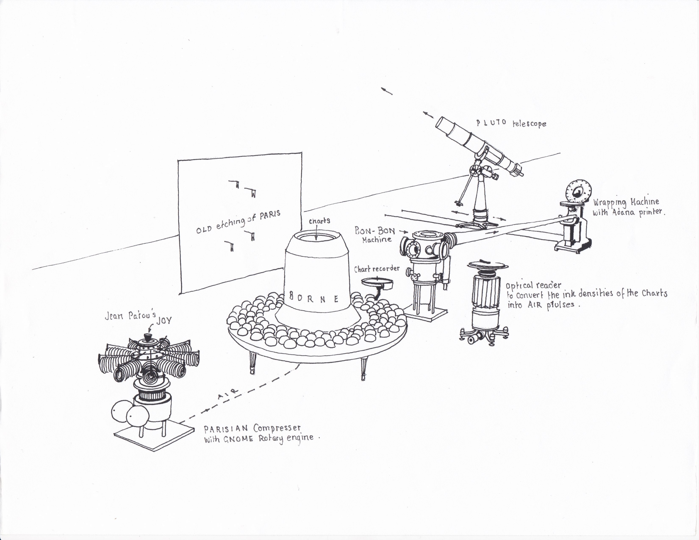

I give you the BonBon machine....
It has been my privelige to work with Paul Etien Lincoln on his spectacular 'Copernican Cabuchon' a machine which takes the biometric signature of an individual and uses it to encode a batch of ten bonbons unique to their reading. The donor of the data is encouraged to consume one of the bonbons there and then, another is fired into the sky over paris from a half scale replica of the telescope used to verify the existance of pluto, the remaining bonbons are the donor's to do with as they will.
He explains it as only he can in his proposal but it has been a phenominal project and one I am incredably grateful to be a part of.
This project is still in production. When it is finished it will be shipped to Paris and made available for anyone to participate in. The bonbons fired into to sky will include a message explaining the project to whomever finds it and inviting them to come participate themselves.
Step 0: A Gnome Rotary Engine is used to compress the Parisian air used to power the pnumatic injection of chocolate and the telescope-canon. Four resevours of moltern chocolate for each of the humors are kept under heat and pressure in the center of the Borne on which the subject has their measurements taken.
Step 1: The subject's biometric signatrue is recorded onto a paper disk according to the four humors: water is measured as the galvanic responce across the surface of their skin, air as depth of respiration, fire as pressure of blood and lastly earth as rate of pulse. The subjects are instructed to think of their desires and anxieties in turn to provoke emotional reactions at oposing ends of the human spectrum.
Step 2: The biometric record is manually removed from the recorder and placed on the reader which feeds the signal into one of the Arduino Uno circuit boards which transcodes the signature into instructions for the mechanism.
Step 3: Each of the four moltern humor chocolates are in sequence pnumatically injected into a mold under vacume at levels of intensity denoted by the biometric reading and rotated gyroscopically in 3 dimensions to ensure uniform layering.
Step 4: Once the last humor as formed the softer inner core the bonbons are slowly passed down a convery belt in a long hollow tube to the wrapping machine allowing time to cool.
Step 5: The bonbons are wrapped by a bunch wrapping machine derived from the design of William Rose. The bonbon is first wrapped in foil and then in a jacket printed with an insignia, a personalized message and some of the biometric data.
Step 6: The wrapping machine presents the bonbons for the assistant to distrubute. Including loading one into the telescope encasulated with a parachute and message. It is then fired by a pnumatic canon powered by the compressed air of the Gnome rotary engine. The canon mechaninsim is then replaced with the original telescopic component which is used to take a photograph of the flying bonbon.